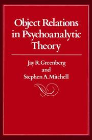

Object Relations in Psychoanalytic Theory
Book·Jay R. Greenberg, Stephen A. Mitchell, 1983·精神分析理论中的客体关系

Traces the opposition between the drive model and the relational model, and provides a framework for later relational psychoanalysis.
- Author
- Jay R. Greenberg, Stephen A. Mitchell
- Year
- 1983
- Difficulty
- Advanced
- Kind
- History
- Schools
- Relational Psychoanalysis
Editions
- English edition Object Relations in Psychoanalytic Theory Jay R. Greenberg, Stephen A. Mitchell · Harvard University Press, first edition · 1983 Open Library ↗